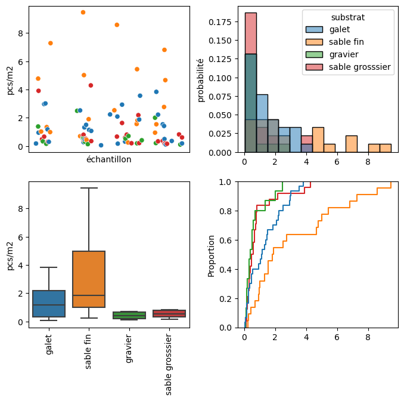
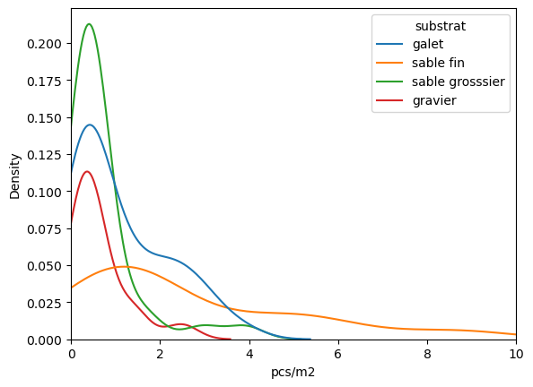
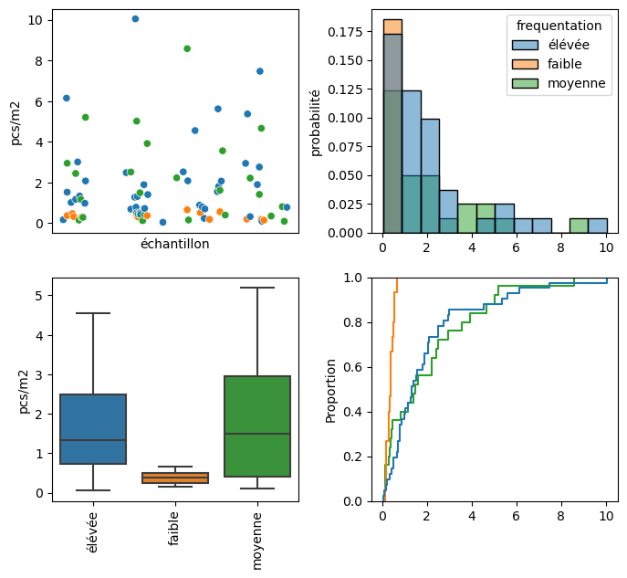
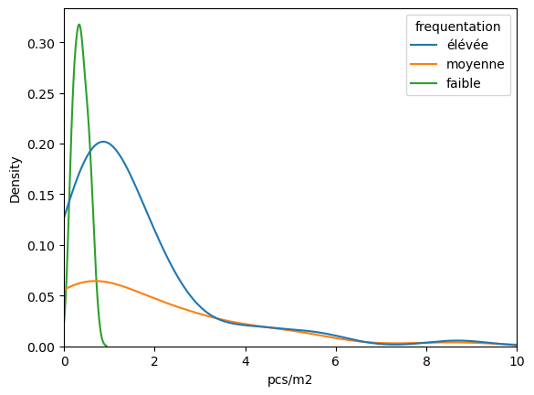
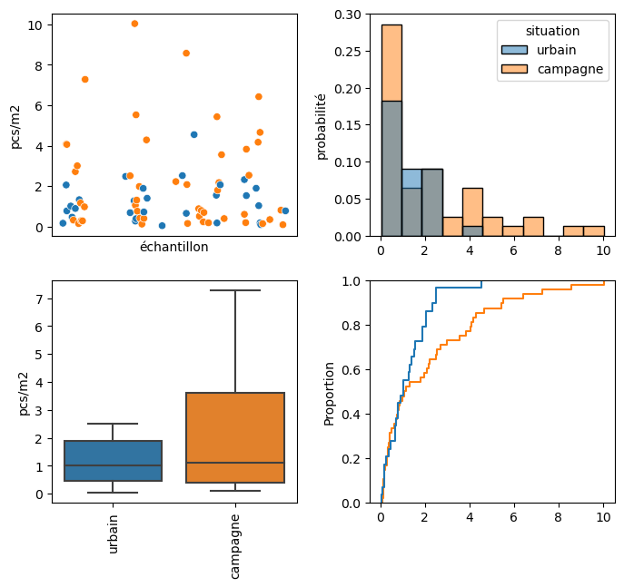
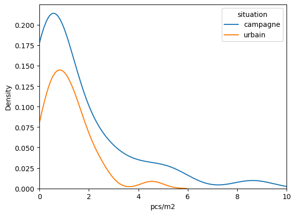
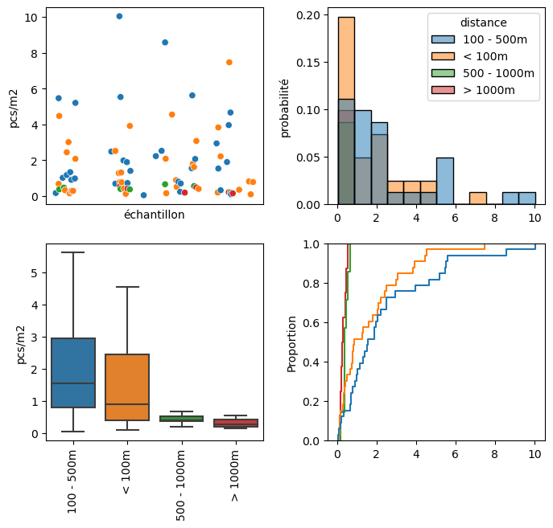
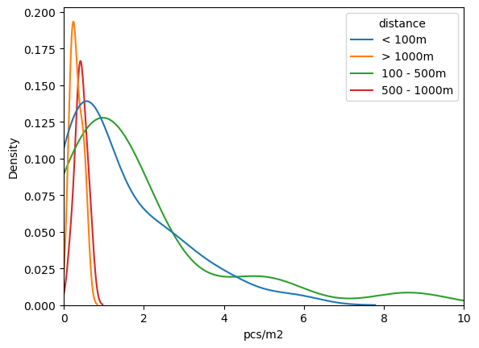

Show code cell source
%load_ext watermark
import numpy as np
import pandas as pd
import datetime as dt
import matplotlib.pyplot as plt
import seaborn as sns
from myst_nb import glue
from IPython.display import Markdown as md
from slugify import slugify
from plastockmethods import name_the_zones, name_the_particles, frequentation_name, situation_name
from plastockmethods import particle_groups, name_the_substrate, name_the_distance, table_css_styles
a_property = {'color' : 'red'}
def translate_describe(x, value_column):
described = x.to_dict()
described.pop("count")
described["moyenne"] = described.pop("mean")
described["écart-type"] = described.pop("std")
df = pd.DataFrame(described.items())
df.set_index(0, inplace=True)
df.rename(columns={1:value_column}, inplace=True)
df.index.name = None
return df
def add_labels_display(data, column_name, labels):
# Changes column values from integer to labels and sets df.index to column_name
data[column_name] = data[column_name].apply(lambda x: labels[x])
data.set_index(column_name, drop=True, inplace=True)
data.index.name = None
return data.style.format(precision=2).set_table_styles(table_css_styles)
def normalize_column(x):
return (x - x.min())/(x.max()-x.min())
def attribute_summary(some_data, vals, voi, columns: dict = None, labels: dict = None):
groupby = ['echantillon', voi]
data = some_data.groupby(groupby, as_index=False)[vals].sum()
data[voi] = data[voi].apply(lambda x: labels[x])
data_summary = data.groupby(voi, as_index=False)[vals].describe()
data_summary[['count', 'max', 'min']] = data_summary[['count', 'max', 'min']].astype('int')
data_summary.rename(columns=columns, inplace=True)
data_summary.set_index(voi, inplace=True, drop=True)
data_summary.index.name = None
select_values = data_summary["moyenne"] > 1.45
test_one = data_summary.loc[select_values].index
select_values = data_summary["50%"] > .78
test_two = data_summary.loc[select_values].index
d_sum = data_summary.style.set_table_styles(table_css_styles).format(precision=2)
d_sum = d_sum.set_properties(subset = pd.IndexSlice[test_one,["moyenne"]], **a_property)
return d_sum.set_properties(subset = pd.IndexSlice[test_two,["50%"]], **a_property)
def attribute_summary_grid(data, vals, voi, labels: dict=None, stat="probability"):
groupby = ['date', voi]
some_data = data.groupby(groupby, as_index=False)[vals].sum()
some_data[voi] = some_data[voi].apply(lambda x: labels[x])
fig, axs = plt.subplots(2,2, figsize=(8,7))
sns.scatterplot(some_data,x="date", y=vals, hue=voi, ax=axs[0,0])
sns.boxplot(some_data, x=voi, y=vals, hue=voi, showfliers=False, ax=axs[1,0], dodge=False)
sns.histplot(some_data,x=vals, hue=voi, ax=axs[0,1], stat=stat)
sns.ecdfplot(some_data, x=vals, hue=voi, ax=axs[1,1])
# axs[0,0].set_ylim(-1, 1000)
# axs[0,1].set_xlim(-1, 1000)
# axs[1,1].set_xlim(-1, 1000)
axs[0,0].tick_params(axis="x", which="both", bottom=False, top=False, labelbottom=False)
axs[0,0].set_xlabel("échantillon")
axs[0,0].set_ylabel("pcs/m2")
axs[0,0].get_legend().remove()
axs[1,0].get_legend().remove()
axs[1,0].set_xlabel("")
axs[1,0].set_ylabel("pcs/m2")
axs[0,1].set_xlabel("")
axs[0,1].set_ylabel("probabilité")
axs[1,0].tick_params(axis="x", rotation=90, )
axs[1,1].get_legend().remove()
axs[1,1].set_xlabel("")
plt.subplots_adjust(wspace=.3)
plt.tight_layout
plt.show()
new_data = pd.read_csv("data/macro_current.csv")
beach_data = pd.read_csv("data/end_pipe/asl_beaches.csv")
n_beach_data = pd.read_csv("data/pstock_beaches_current.csv")
9. Annex : Macro plage et attribut#
9.1. Substrat#
| n échantillons | moyenne | écart type | min | 25% | 50% | 75% | max | |
|---|---|---|---|---|---|---|---|---|
| galet | 36 | 1.13 | 1.05 | 0 | 0.28 | 0.61 | 1.92 | 3 |
| gravier | 16 | 0.62 | 0.63 | 0 | 0.20 | 0.46 | 0.64 | 2 |
| sable fin | 27 | 2.59 | 2.44 | 0 | 0.91 | 1.56 | 4.37 | 8 |
| sable grosssier | 31 | 0.69 | 0.82 | 0 | 0.29 | 0.40 | 0.63 | 3 |

9.1.1. Les plages substrat = sable fin#
Baby Plage, Bouveret, Excenevex, Préverenges, Rolle, Vidy, Grangettes

9.2. Frequentation#
| n échantillons | moyenne | écart type | min | 25% | 50% | 75% | max | |
|---|---|---|---|---|---|---|---|---|
| faible | 15 | 0.37 | 0.16 | 0 | 0.25 | 0.38 | 0.49 | 0 |
| moyenne | 28 | 1.87 | 2.06 | 0 | 0.34 | 1.05 | 2.62 | 8 |
| élévée | 55 | 1.53 | 1.61 | 0 | 0.64 | 0.94 | 1.89 | 8 |

9.2.1. Les plages fréquentation = moyenne#
Aubonne, Lugrin, Saint-Disdille, Grangettes, Anthy, Gland, Pichette
9.2.2. Les plages fréquentation = élevée#
Amphion, Baby Plage, Bouveret, Clarens, Excenevex, Préverenges, Rolle, Savonnière, Vidy, Tougues, Versoix, Port Choiseul, Hermance, Lutry

9.3. Situation#
| n échantillons | moyenne | écart type | min | 25% | 50% | 75% | max | |
|---|---|---|---|---|---|---|---|---|
| campagne | 67 | 1.59 | 1.94 | 0 | 0.36 | 0.70 | 2.15 | 8 |
| urbain | 31 | 1.14 | 0.93 | 0 | 0.57 | 0.94 | 1.47 | 4 |

9.3.1. Les plages situation = campagne#
Amphion, Aubonne, Bouveret, Excenevex, Lugrin, Préverenges, Saint-Disdille, Savonnière, Grangettes, Tougues, Versoix, Tolochenaz, Anthy, Crans, Gland, Cully, Pichette
9.3.2. Les plages situation = urbain#
Baby Plage, Clarens, Rolle, Vidy, Port Choiseul, Hermance, Lutry, Meillerie

9.4. Distance#
| n échantillons | moyenne | écart type | min | 25% | 50% | 75% | max | |
|---|---|---|---|---|---|---|---|---|
| 100 - 500m | 44 | 1.84 | 2.04 | 0 | 0.67 | 1.11 | 1.94 | 8 |
| 500 - 1000m | 7 | 0.43 | 0.15 | 0 | 0.38 | 0.40 | 0.52 | 0 |
| < 100m | 39 | 1.42 | 1.40 | 0 | 0.38 | 0.78 | 2.15 | 5 |
| > 1000m | 8 | 0.32 | 0.14 | 0 | 0.21 | 0.28 | 0.43 | 0 |

9.4.1. Les plages distance = 100 - 500m#
Baby Plage, Bouveret, Lugrin, Préverenges, Vidy, Grangettes, Tougues, Versoix, Port Choiseul, Hermance, Lutry
9.4.2. Les plages distance = < 100m#
Amphion, Clarens, Excenevex, Rolle, Saint-Disdille, Savonnière, Anthy, Gland, Cully, Pichette

9.5. Orientation#
| n échantillons | moyenne | écart type | min | 25% | 50% | 75% | max | |
|---|---|---|---|---|---|---|---|---|
| E | 4 | 2.32 | 1.38 | 0 | 1.42 | 2.28 | 3.19 | 3 |
| ESE | 4 | 0.60 | 0.08 | 0 | 0.56 | 0.59 | 0.64 | 0 |
| N | 8 | 1.50 | 1.17 | 0 | 0.45 | 1.44 | 2.46 | 3 |
| NE | 12 | 2.15 | 1.53 | 0 | 1.36 | 1.94 | 2.62 | 5 |
| NNE | 8 | 1.26 | 0.49 | 0 | 0.93 | 1.11 | 1.51 | 2 |
| NNO | 4 | 0.32 | 0.13 | 0 | 0.26 | 0.32 | 0.38 | 0 |
| NO | 12 | 2.35 | 2.77 | 0 | 0.51 | 0.77 | 4.75 | 8 |
| ONO | 8 | 2.56 | 3.18 | 0 | 0.37 | 0.68 | 4.42 | 8 |
| OSO | 4 | 0.26 | 0.31 | 0 | 0.09 | 0.14 | 0.31 | 0 |
| SE | 4 | 0.30 | 0.18 | 0 | 0.18 | 0.25 | 0.36 | 0 |
| SO | 12 | 1.04 | 0.78 | 0 | 0.32 | 0.88 | 1.62 | 2 |
| SSE | 11 | 0.76 | 0.72 | 0 | 0.26 | 0.40 | 1.15 | 2 |
| SSO | 7 | 1.34 | 1.45 | 0 | 0.73 | 0.78 | 1.16 | 4 |
Git repo: https://github.com/hammerdirt-analyst/plastock.git
Git branch: glm_p
pandas : 2.0.0
seaborn : 0.12.2
numpy : 1.24.2
matplotlib: 3.7.1